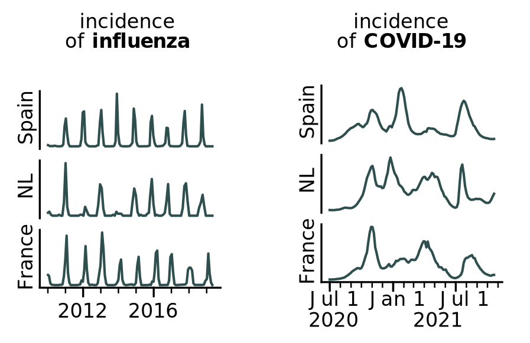

About complex infection dynamics - and how we are the ones creating them

Researchers from the Max Planck Institute for Dynamics and Self-Organisation took a deeper look
at what drives such infection dynamics, including how societal reactions can influence the
spread of the infection itself. More specifically, they showed with the help of a model that
society’s behaviour can actually induce complex dynamics. Not only that: Such
complexity can
even be optimal when considering expected costs.
So let's dive into what they found and come back to the real-life data later - then with new knowledge at hand.
So let's say there's a virus - but what drives infection waves?
As we know from Influenza, seasonality is one aspect that creates oscillation. We observe infection numbers decreasing in the summer and rising in the winter, as people stay indoors more and it's easier to get infected etc. The green graph visualizes this yearly peak. (The x-axis counts in years; the y-axis represents infections in percent.)Yet the factor that gained importance during COVID-19 is society's preventative disease mitigation, meaning different measures to fight infections, such as the introduction of masks or the reduction of social interactions. The intensity of these mitigation measures depends on the severity of the disease spread, i.e., how many people are infected – so as infection numbers rise, society's mitigation does too, until that eventually leads to the wave getting broken and infections going down again.
When infection numbers are low, mitigation is accordingly lowered – which then leads to recurring infection waves. Generally speaking, as we adapt to the infection numbers, we correspondingly proceed to change them – resulting in yet another adaptation and change. As a sole factor, this "feedback loop" would result in dynamics such as shown by the blue graph.
Two driving forces interacting can create complexity
However, if seasonality and mitigation have comparable influences and affect each other similarly, a combination of both factors can result in complex infection dynamics. These give rise to completely different graphs, as shown by this example. When infection numbers are low, mitigation is accordingly lowered – which then leads to recurring infection waves. When infection numbers are low, mitigation is accordingly lowered – which then leads to recurring infection waves. When infection numbers are low, mitigation is accordingly lowered – which then leads to recurring infection waves. When infection numbers are low, mitigation is accordingly lowered – which then leads to recurring infection waves. When infection numbers are low, mitigation is accordingly lowered – which then leads to recurring infection waves. When infection numbers are low, mitigation is accordingly lowered – which then leads to recurring infection waves. When infection numbers are low, mitigation is accordingly lowered – which then leads to recurring infection waves. When infection numbers are low, mitigation is accordingly lowered – which then leads to recurring infection waves. When infection numbers are low, mitigation is accordingly lowered – which then leads to recurring infection waves. When infection numbers are low, mitigation is accordingly lowered – which then leads to recurring infection waves. When infection numbers are low, mitigation is accordingly lowered – which then leads to recurring infection waves. When infection numbers are low, mitigation is accordingly lowered – which then leads to recurring infection waves. When infection numbers are low, mitigation is accordingly lowered – which then leads to recurring infection waves. When infection numbers are low, mitigation is accordingly lowered – which then leads to recurring infection waves. When infection numbers are low, mitigation is accordingly lowered – which then leads to recurring infection waves. When infection numbers are low, mitigation is accordingly lowered – which then leads to recurring infection waves. When infection numbers are low, mitigation is accordingly lowered – which then leads to recurring infection waves. When infection numbers are low, mitigation is accordingly lowered – which then leads to recurring infection waves. When infection numbers are low, mitigation is accordingly lowered – which then leads to recurring infection waves. When infection numbers are low, mitigation is accordingly lowered – which then leads to recurring infection waves. When infection numbers are low, mitigation is accordingly lowered – which then leads to recurring infection waves. When infection numbers are low, mitigation is accordingly lowered – which then leads to recurring infection waves.Waiting on scroll events...